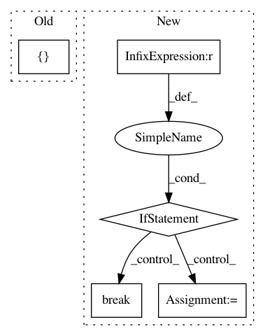

5e76b6981d0b48def00d4fa97caec24accf402fd,contents/5.2_Prioritized_Replay_DQN/RL_brain.py,SumTree,get_leaf,#SumTree#,59
Before Change
def get_leaf(self, lower_bound):
leaf_idx = self._retrieve(lower_bound) // search the max leaf priority based on the lower_bound
data_idx = leaf_idx - self.capacity + 1
return [leaf_idx, self.tree[leaf_idx], self.data[data_idx]]
def _retrieve(self, lower_bound, parent_idx=0):
Tree structure and array storage:
After Change
while True: // the while loop is faster than the method in the reference code
cl_idx = 2 * parent_idx + 1 // this leaf"s left and right kids
cr_idx = cl_idx + 1
if cl_idx >= len(self.tree): // reach bottom, end search
leaf_idx = parent_idx
break
else: // downward search, always search for a higher priority node
if v <= self.tree[cl_idx]:
parent_idx = cl_idx
else:
v -= self.tree[cl_idx]
parent_idx = cr_idx
data_idx = leaf_idx - self.capacity + 1
return leaf_idx, self.tree[leaf_idx], self.data[data_idx]
@property
In pattern: SUPERPATTERN
Frequency: 3
Non-data size: 5
Instances
Project Name: MorvanZhou/Reinforcement-learning-with-tensorflow
Commit Name: 5e76b6981d0b48def00d4fa97caec24accf402fd
Time: 2017-08-16
Author: morvanzhou@gmail.com
File Name: contents/5.2_Prioritized_Replay_DQN/RL_brain.py
Class Name: SumTree
Method Name: get_leaf
Project Name: Unity-Technologies/ml-agents
Commit Name: 2ab8d843f4fd933958e2022261a1264ba61ee3db
Time: 2020-12-23
Author: vincentpierre@unity3d.com
File Name: ml-agents/mlagents/trainers/policy/policy.py
Class Name: Policy
Method Name: __init__
Project Name: lingpy/lingpy
Commit Name: 4560e7769fc21e04c5f673f0549de6601d43de45
Time: 2013-09-09
Author: mattis.list@posteo.de
File Name: setup.py
Class Name:
Method Name: